setup.bat をダブルクリックします (置き場所はどこでも構いません)。mgtkit 本体は C:\Users\(自分)\mgtkit に自動で取得されます。ここがバージョン管理の置き場所になるため、このフォルダを移動・改名しないでください (マネージャーの起動・更新・提出はすべてこの場所を前提に動きます)。開発せずにアプリを実行するだけなら、原則としてここで作業して OK です (ふだんの業務はこれだけで完結します)。もし機能追加の作業をするときは (まれなケースです)、このフォルダを直接いじらず、別の場所にコピーしてから作業してください (4 章のとおり、取得した版のコピーで作業します)。
参加申請は自動です — 初回起動時に「参加申請」が自動送信され、管理者が承認すると提出・承認に参加できるようになります (承認までの間も、起動・更新・β版の試用・フィードバックはそのまま使えます)。承認されたあとも特別な操作は不要で、マネージャーを起動するだけで参加が完了します。
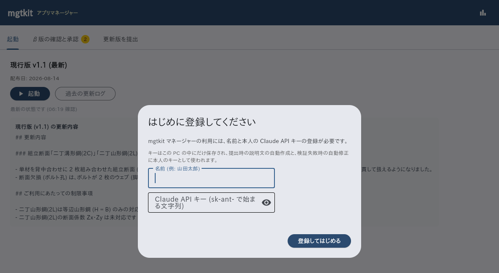
2 回目からは C:\Users\(自分)\mgtkit\manager\マネージャー起動.bat をダブルクリックするだけです。起動のたびにマネージャー自体も自動で最新の状態に更新されます。「起動」ボタンで mgtkit がブラウザで開きます。
画面の上のタブは、左から「起動」「β版の確認と承認」「更新版を提出」の 3 つです (使う回数の多いものから並べています)。この資料の 4 章はいちばん右のタブ、5 章はまん中のタブの話です。
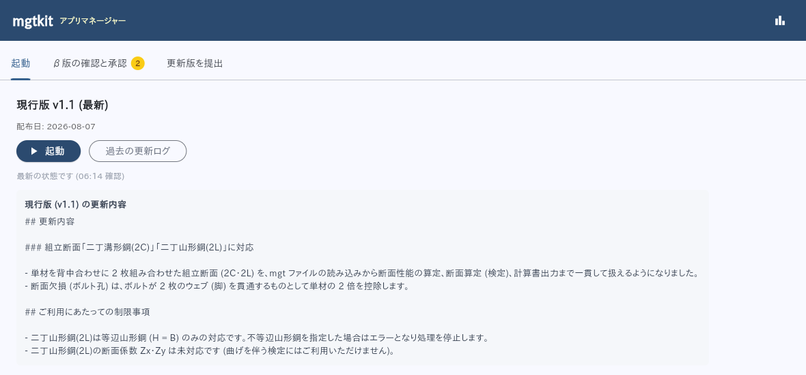
更新の操作は不要になりました。マネージャーが起動時と 10 分ごとの確認で新しい正式版を見つけると、自動で取り込み、起動タブに黄色いタグでお知らせします。承認がそろってから正式版が出来上がるまでの間は「新しい正式版を準備中です (数分かかります)。公開されると自動で更新されます。」のタグが出ます。
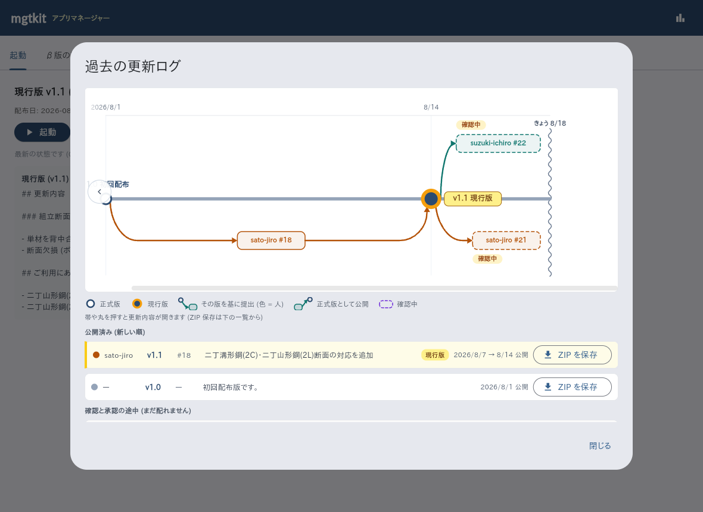
version.json が入ったフォルダ) を基に改造します。C:\Users\(自分)\AppData\Local\mgtkit\stable\mgtkit のコピーなど。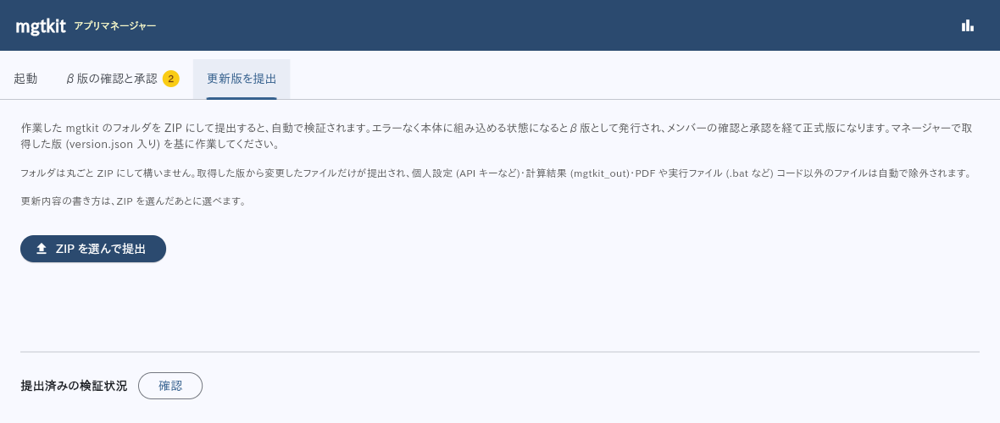
迷ったらフォルダ丸ごと ZIP で OK です。取得した版から変更したファイルだけが提出され、個人設定 (API キーなど)・計算結果 (mgtkit_out)・テストや開発用フォルダは自動で除外されます。実行ファイル (.exe .bat など) や PDF が ZIP に入っていてもエラーにはならず、更新情報としては読まれません (自動で除外されます)。API キー・アクセストークン・秘密鍵らしき文字列がコード内に紛れていた場合は、検出して提出をブロックします。パスワードらしき記述や必要ライブラリ (requirements.txt) の変更は、確認画面に注意として出るだけで、確認のうえ続けられます。
ZIP を選ぶと確認画面が出ます。ここで「更新内容」を Claude に書かせるか、自分で書くかを選びます。ここで決まった文章は、正式版になったときの「更新内容」としてそのまま全員に表示されます。
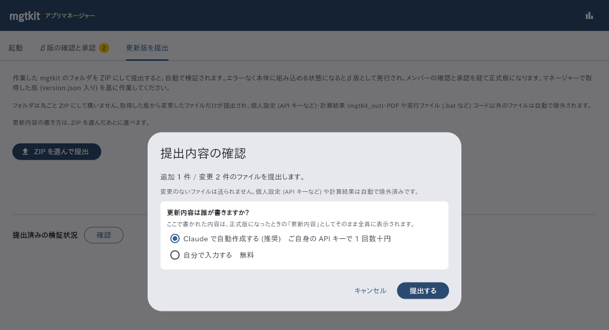
自分で入力するを選ぶと、その場に記入欄が出ます (無料)。薄いグレーの文は記入例です (書き始めると消えます)。「更新内容」は空欄のままでは提出できません。制限事項は無ければ空欄で構いません。
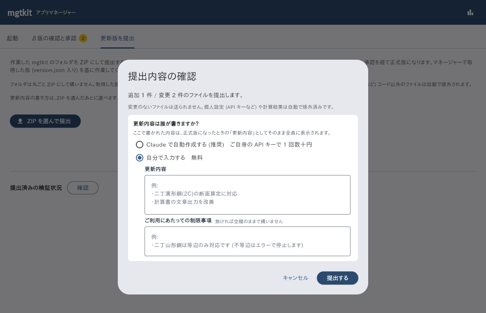
Claude で自動作成するを選んだ場合は、書き上がった文章が提出前に表示されます。おかしなところがあればその場で直せます。直してから「この内容で提出する」を押してください。
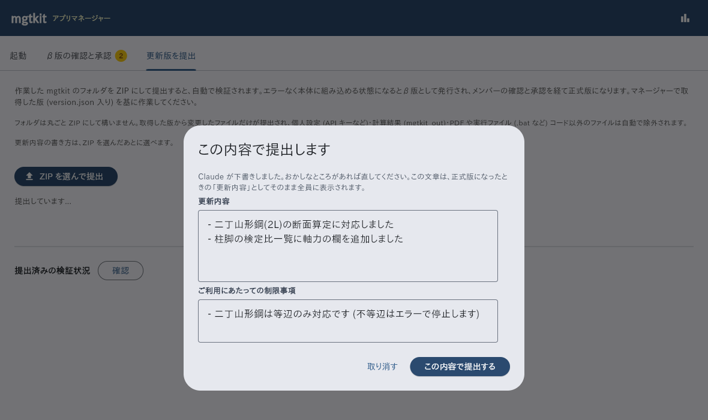
提出すると自動で検証 (テスト・安全チェック) が行われ、エラーなく本体に組み込める状態になるとβ版として発行されます。
検証を通過した提出は「β版」として発行され、このタブに提出ごとにまとまって表示されます。確認 → フィードバック → 承認までここで完結します。
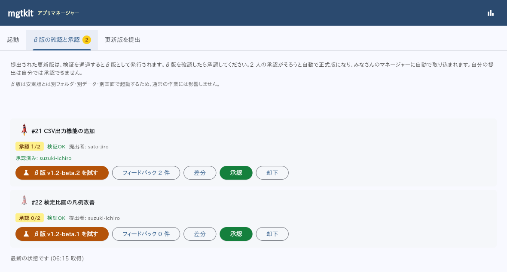
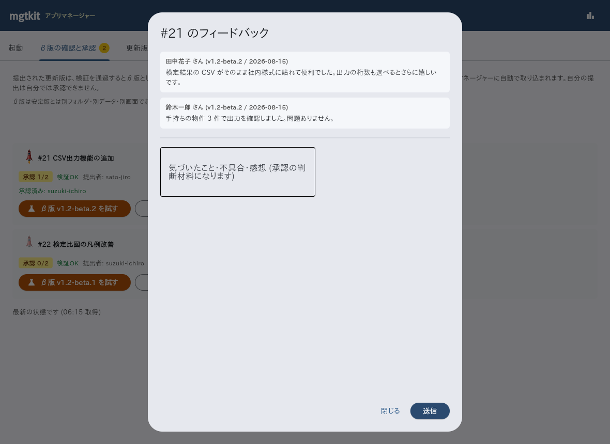
自分の提出は自分では承認できません。また 1 人でも却下があるとリリースされません (修正版の再提出で解消します)。
「差分」を押すと、マネージャーの画面の中に詳細ビューワが開きます (別のアプリに移らずそのまま確認できます)。
下の「ブラウザで開く」を押すと、同じ内容をいつものブラウザでも開けます。次のことをしたいときはこちらが便利です。
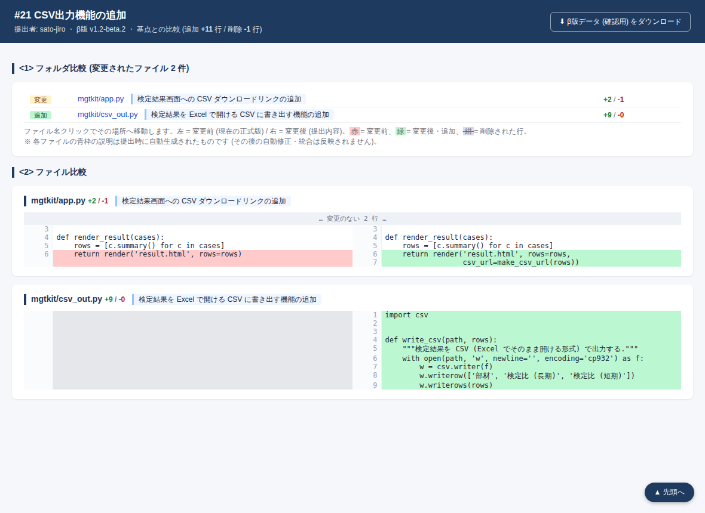
「確認用データを保存...」(ブラウザでは右上の「⬇ β版データ (確認用) をダウンロード」) から、確認用データ (#N_確認用.zip) を取得できます。中身は「一式」(そのまま動作チェックに使えるβ版まるごと) と「変更のみ」(変更されたファイルだけ。中身チェック用) です。保存の前に、資料「バージョン管理と同時開発のしくみ」4.2 の 3 つのリスクを確認する画面が出ます。取得したデータは動作チェック・中身チェック用です。機能追加の作業は、これまでどおりマネージャーで取得した版のコピーで行ってください。
画面右上の棒グラフのマークを押すと、このマネージャー経由で使った Claude API の利用量と料金の目安が確認できます (月の小計 → 直近 30 日のグラフ → 日ごとの利用料 → 通算合計)。
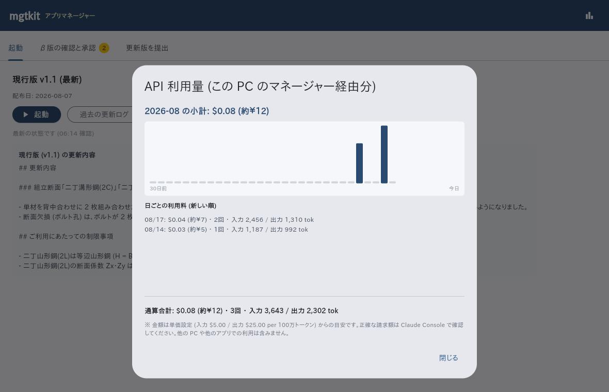
| 症状 | 対処 |
|---|---|
| 「GitHub へのログインが必要です」と表示される | コマンドプロンプトで gh auth login を実行してログインし直す |
| マネージャーが起動しない | 配布された setup.bat をもう一度実行する (不足ツールを再導入します) |
setup.bat が「このウィンドウを閉じて、setup.bat をもう一度実行してください」で終わった | 案内のとおり画面を閉じて、setup.bat をもう一度実行する (導入したツールがこの画面にはまだ反映されないため) |
setup.bat が「winget が見つかりません」で止まる | Microsoft Store から「アプリ インストーラー」を導入し、setup.bat をもう一度実行する |
| マネージャーが使えないが、いますぐアプリを動かしたい | 非常用: C:\Users\(自分)\mgtkit\起動.bat をダブルクリック (手元のアプリを直接起動) |
| 検証が自動修正でも通らない | 提出に問題がある可能性があります。表示される要約を確認のうえ管理者に相談 |
| 起動時に「直接変更を退避しました」と表示された | C:\Users\(自分)\mgtkit 内のファイルを直接編集した跡があったため、mgtkit\stash\日時\ に退避して最新版に更新されました。「詳細」で差分を確認でき、退避フォルダから内容を回収できます |
マネージャーの初回登録で入力する Claude API キー (sk-ant- で始まる文字列) は、Anthropic の開発者向け管理画面「Claude Console」で発行します。手順は 4 ステップです。
https://console.anthropic.com を開き、Anthropic アカウントでログインします (初回はアカウント作成と支払い設定が必要です。API の利用料は claude.ai の Pro / Max プランとは別の従量課金です)。mgtkit など用途が分かるもの、有効期限は 1 か月程度が無難です (長期間有効なキーは漏えい時のリスクが大きくなります)。Claude Console は Anthropic の画面で、この資料では図を載せていません (実物と食い違う絵を載せないため)。画面の文言が変わっていても、「API キー」→「キーを作成」の流れは同じです。
発行されたキーは発行直後の画面でしか表示されません。その場でコピーして、マネージャーの初回登録画面に貼り付けてください。キーは自分の PC 内にのみ保存され、提出データには含まれません。
期限が切れたとき (キーの再登録): 同じ手順で新しいキーを発行し、C:\Users\(自分)\AppData\Local\mgtkit\settings.json を削除してからマネージャーを起動し直すと、登録画面が再表示されるので新しいキーを入力してください。